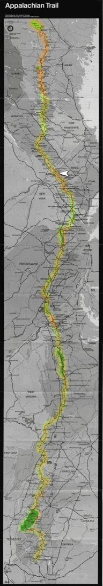

| Home | The Fox | Statistics | Maps | Churches |
StatusConfirmed - Last contact with the Fox was at:Confirmed - Connecticut-New York Line Confirmed - 1431.8 miles complete (66.28%) Confirmed - 728.4 miles to go (33.72%) Cheshire MA[6 July 1999] The Fox took Monday afternoon off since the Cheshire post office, where his latest drop box was located, was closed for the Independence Day weekend. He stayed on the porch of an Appalachian Trail Conference member; hikers there typically receive dinner leftovers, and the Fox was also treated to ice cream with blue berries, whipped cream, and a cherry on top.While the simple wooden shelter is the stereotype of Appalachian Trail lodging, the Fox indicated that a quite wide range of accommodations are available to through hikers. In addition to back porches like the one he spent the night on, there are homes and parts of churches which are open for the benefit of through hikers. On Friday night the Fox stayed at a shelter just south of I-90, the Massachusetts Turnpike. The shelter was a cabin staffed by caretakers, who both fed him leftovers that evening and for three dollars offered a breakfast of peach pancakes Saturday morning. ``We're not going to run out of batter, so have all you want,'' the Fox quoted them as telling the hikers. The breakfast seems to have been a high point of the Fox's week. The Fox was not pleased by the high fraction of Massachusetts occupied by wetlands - ``swamps'', as he called them. In general only the hills and mountains of the state rise above the water table, leaving wet pockets in between. These are prodigious breeding grounds for both flies and mosquitoes. State law apparently makes it illegal to dismantle beaver dams, which have flooded the trail in several places and required its rerouting. Speaking of wildlife, he says that porcupines are quite active in his area. Their love of salt is apparently quite extreme; as an example the Fox cited a wooden bench he saw recently in a shelter, part of which had been eaten away by one or more porcupines to get the salt left in the wood by hikers' sweat. They are also known to eat shoes. While he has not seen any of these creatures, he has encountered deer, lots of little frogs, and thinks he glimpsed the rump of a bear running off into the woods. The Fox is quickly approaching the White Mountains. This range, which lies primarily in New Hampshire, are susceptible to quite severe weather - which their granite spines often leave hikers exposed to. Our intrepid hiker has therefore requested, and should soon receive, additional clothing and insulation to protect him in the month ahead. |

|